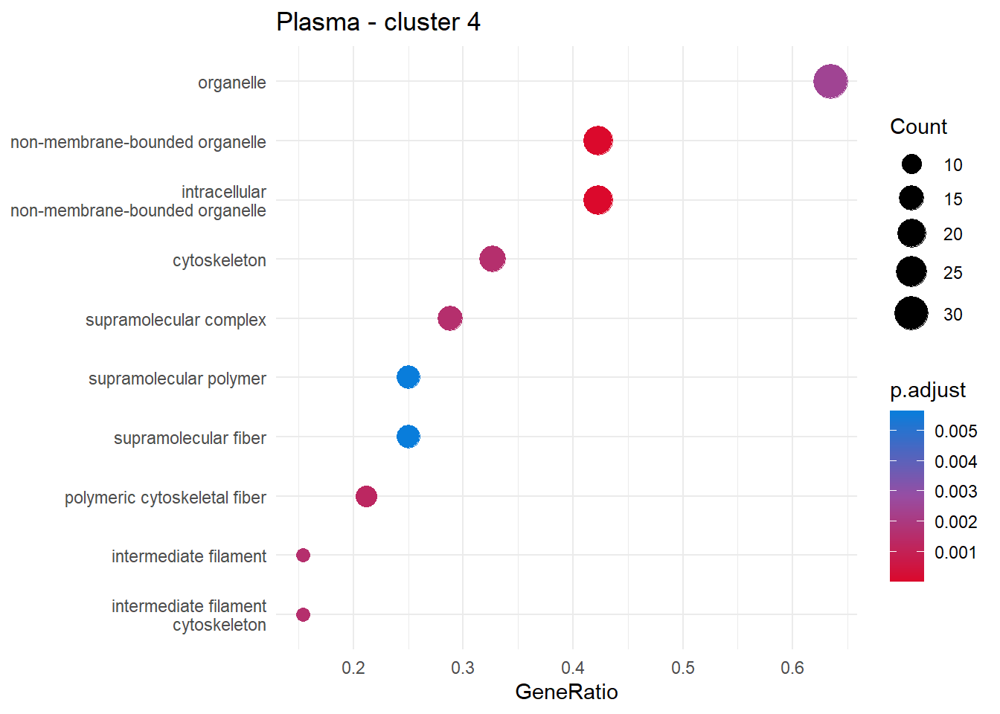
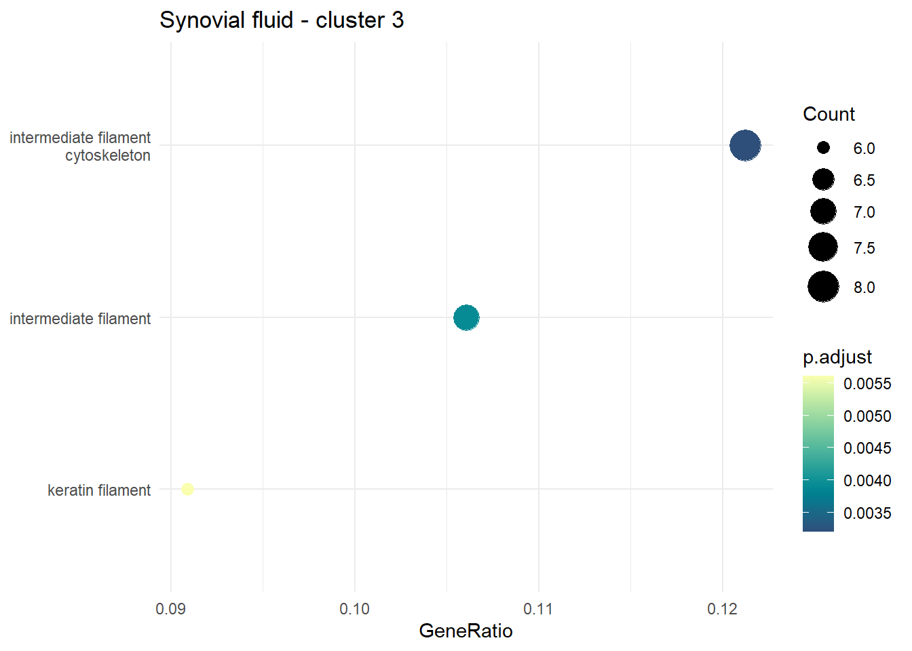
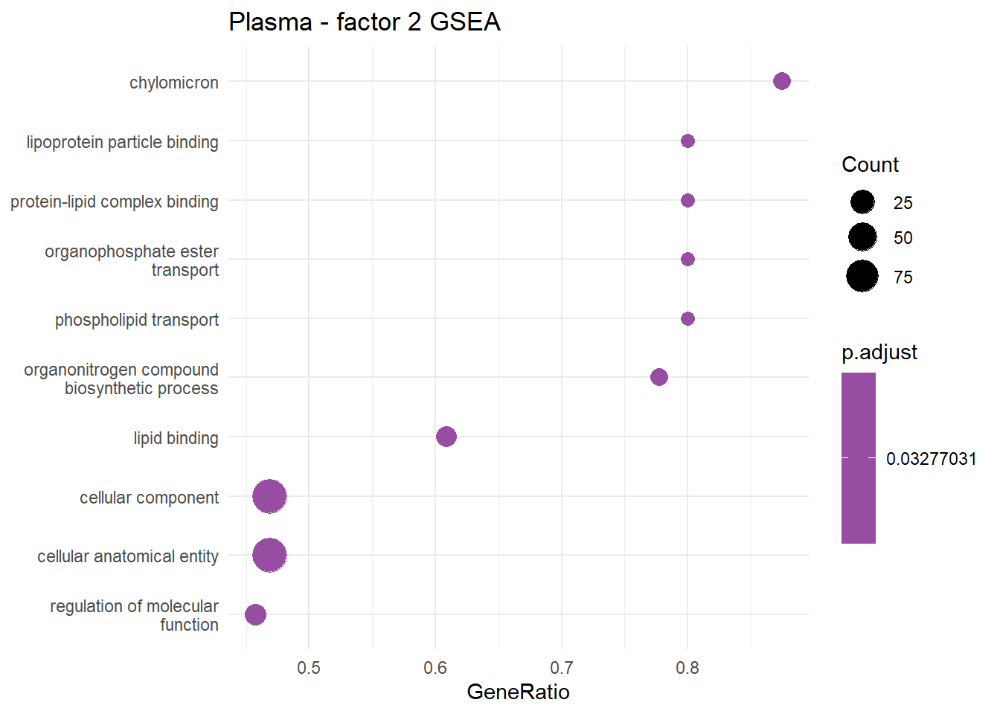

Multi-omics - functional enrichment
Emily Johnson
2022-09-28
Last updated: 2022-11-25
Checks: 6 1
Knit directory: anderson-peffers_OA/
This reproducible R Markdown analysis was created with workflowr (version 1.7.0). The Checks tab describes the reproducibility checks that were applied when the results were created. The Past versions tab lists the development history.
The R Markdown file has unstaged changes. To know which version of
the R Markdown file created these results, you’ll want to first commit
it to the Git repo. If you’re still working on the analysis, you can
ignore this warning. When you’re finished, you can run
wflow_publish to commit the R Markdown file and build the
HTML.
Great job! The global environment was empty. Objects defined in the global environment can affect the analysis in your R Markdown file in unknown ways. For reproduciblity it’s best to always run the code in an empty environment.
The command set.seed(20220927) was run prior to running
the code in the R Markdown file. Setting a seed ensures that any results
that rely on randomness, e.g. subsampling or permutations, are
reproducible.
Great job! Recording the operating system, R version, and package versions is critical for reproducibility.
Nice! There were no cached chunks for this analysis, so you can be confident that you successfully produced the results during this run.
Great job! Using relative paths to the files within your workflowr project makes it easier to run your code on other machines.
Great! You are using Git for version control. Tracking code development and connecting the code version to the results is critical for reproducibility.
The results in this page were generated with repository version fc9ca8a. See the Past versions tab to see a history of the changes made to the R Markdown and HTML files.
Note that you need to be careful to ensure that all relevant files for
the analysis have been committed to Git prior to generating the results
(you can use wflow_publish or
wflow_git_commit). workflowr only checks the R Markdown
file, but you know if there are other scripts or data files that it
depends on. Below is the status of the Git repository when the results
were generated:
Ignored files:
Ignored: .Rhistory
Ignored: .Rproj.user/
Ignored: analysis/.Rhistory
Untracked files:
Untracked: code/ArchRpalettes.R
Untracked: imgs/clustering_results/plasma_c4_ora.PDF
Untracked: imgs/clustering_results/synovial_fluid_c1_ora.PDF
Untracked: imgs/jDR/plasma/
Untracked: imgs/jDR/plasma_f2_gsea.PDF
Untracked: imgs/jDR/plasma_factors_gsea_non-sig.PDF
Untracked: imgs/jDR/synovial_fluid_f5_gsea.PDF
Untracked: imgs/jDR/synovial_fluid_factors_gsea_non-sig.PDF
Untracked: sf_time_model.hdf5
Unstaged changes:
Modified: analysis/06_jDR.Rmd
Modified: analysis/07_Clustering.Rmd
Modified: analysis/08_Functional_enrichment.Rmd
Modified: analysis/references.bib
Modified: code/utility-functions.R
Modified: data/mfuzz_cluster_sf_data.rds
Modified: data/mofa2_sf.rds
Modified: data/mofa2_sf_df.rds
Modified: imgs/clustering_results/clustering_results.PDF
Modified: imgs/clustering_results/dtw_clustering_results.PDF
Modified: imgs/clustering_results/dtw_clustering_results_wide.PDF
Modified: imgs/clustering_results/mfuzz_clustering_results.PDF
Modified: imgs/clustering_results/plasma_cluster_corr.PDF
Modified: imgs/clustering_results/sf_cluster_corr.PDF
Deleted: imgs/jDR/non_sig_plasma_factor_GSEA
Modified: plasma_model.hdf5
Modified: sf_model.hdf5
Note that any generated files, e.g. HTML, png, CSS, etc., are not included in this status report because it is ok for generated content to have uncommitted changes.
These are the previous versions of the repository in which changes were
made to the R Markdown
(analysis/08_Functional_enrichment.Rmd) and HTML
(docs/08_Functional_enrichment.html) files. If you’ve
configured a remote Git repository (see ?wflow_git_remote),
click on the hyperlinks in the table below to view the files as they
were in that past version.
| File | Version | Author | Date | Message |
|---|---|---|---|---|
| Rmd | fc9ca8a | ejjohnson93 | 2022-11-23 | functional enrichment |
| Rmd | 218071a | ejjohnson93 | 2022-11-17 | Clustering + figures |
| Rmd | 6ed591f | ejjohnson93 | 2022-11-11 | jDR + clustering + knitting |
| html | 6ed591f | ejjohnson93 | 2022-11-11 | jDR + clustering + knitting |
| Rmd | e34c9f9 | ejjohnson93 | 2022-11-03 | Updated theme + additional analysis docs |
Load libraries
library(tidyverse)
library(cowplot) # ggplot2 theme
library(ggpubr) # utilities to arrange/annotate ggplot2 plots
library(MetBrewer) # additional palettes
library(clusterProfiler)
library(RBiomirGS)
library(clusterProfiler)
library(pRoloc)Read data
# Plasma
plasma_annotation <- readRDS("./data/plasma_proteomics_annotation.rds")
plasma_pheno <- readRDS("./data/plasma_pheno.rds")
plasma_proteomics_data <- readRDS("./data/plasma_data_norm.rds")
plasma_miRNA_data <- readRDS("./data/plasma_miRNA_data.rds")
plasma_lncRNA_data <- readRDS("./data/plasma_lncRNA_data.rds")
plasma_snRNA_data <- readRDS("./data/plasma_snRNA_data.rds")
# SF
sf_annotation <- readRDS("./data/sf_proteomics_annotation.rds")
sf_pheno <- readRDS("./data/sf_pheno.rds")
sf_proteomics_data <- readRDS("./data/sf_data_norm.rds")
sf_miRNA_data <- readRDS("./data/sf_miRNA_data.rds")
sf_lncRNA_data <- readRDS("./data/sf_lncRNA_data.rds")
sf_snRNA_data <- readRDS("./data/sf_snRNA_data.rds")Annotate data
For GO term analysis we needed to manually annotate the proteomics and sequencing data. The GO term annotation for proteomics data can be readily accessed using the Uniprot accessions. For the sequencing data the miRNA/lncRNA/snRNA first needed to be mapped to the mRNA targets, before the GO terms associated with those targets were extracted.
Proteomics
The tools previously developed by Simon Perkins were employed: https://github.com/CBFLivUni/mapping_and_enrichment. For the proteomics a combined GO annotation dataframe was created for the plasma and synovial fluid:
source('./code/uniprot_dat_reading.R')
source('./code/mapping_with_db_ortho.R')
source('./code/mapping_with_files.R')
source('./code/uniprot_selected_term_types.R')
source('./code/utils.R')# Combine plasma and synovial fluid
proteins_list <- c(row.names(plasma_proteomics_data), row.names(sf_proteomics_data))
# Remove repeats
proteins_list <- unique(proteins_list)GO_anot_protein <- map_using_uniprot_files(input_id = 'UniProtKB-AC', input_values = proteins_list, output_id = 'GO')GO_anot_protein <- as.data.frame(GO_anot_protein)
GO_anot_full <- buildGOmap(GO_anot_protein[,c(2,1)])# Add name annotation
GO_anot_full$names <- goIdToTerm(GO_anot_full$GO, names = TRUE, keepNA = TRUE)
# Add ontology information
ontologies <- go2ont(GO_anot_full$GO)
row.names(ontologies) <- ontologies$go_id
GO_anot_full$ontology <- ontologies[GO_anot_full$GO, 2]Sequencing
miRNA
To begin, all the human miRNA manual GO term annotations were downloaded from the QuickGO database as an equivalent equine annotation doesn’t exist. The link to these annotations can be found here: https://www.ebi.ac.uk/QuickGO/annotations?assignedBy=ARUK-UCL&geneProductType=miRNA&taxonId=9606&taxonUsage=descendants.
More information can be found on miRNA functional annotation here: https://www.ucl.ac.uk/cardiovascular/research/pre-clinical-and-fundamental-science/functional-gene-annotation/microrna-annotation https://rnajournal.cshlp.org/content/22/5/667 https://www.mirbase.org/blog/2018/06/microrna-gene-ontology-annotations/
For the purpose of this analysis the human miRNAs were converted into their equine counterparts.
miRNA_GO <- read.table(file = "./data/QuickGO-annotations-1669061355988-20221121.tsv", sep = "\t", header = TRUE)GO_annot_miRNA <- miRNA_GO[,c(3,5)]
GO_annot_miRNA$SYMBOL <- gsub("Homo sapiens (human) hsa", "eca", GO_annot_miRNA$SYMBOL, fixed = TRUE)GO_annot_miRNA <- GO_annot_miRNA[,c(2,1)]
GO_annot_miRNA$names <- goIdToTerm(GO_annot_miRNA$GO, names = TRUE, keepNA = TRUE)
colnames(GO_annot_miRNA)[1:2] <- c("GO", "Gene")However, the miRNAs in the dataset were poorly represented among this data:
intersect(GO_annot_miRNA$SYMBOL, row.names(plasma_miRNA_data))NULLClustering functional enrichment
Read data in:
plasma_clusters <- readRDS("./data/mfuzz_cluster_plasma_data.rds")
sf_clusters <- readRDS("./data/mfuzz_cluster_sf_data.rds")Plasma
Order by membership:
plasma_clusters <- plasma_clusters[order(plasma_clusters$MEM.SHIP, decreasing = TRUE),]Create list:
plasma_clusters_list <- list(C1 = row.names(plasma_clusters[plasma_clusters$CLUSTER == 1, ]),
C2 = row.names(plasma_clusters[plasma_clusters$CLUSTER == 2, ]),
C3 = row.names(plasma_clusters[plasma_clusters$CLUSTER == 3, ]),
C4 = row.names(plasma_clusters[plasma_clusters$CLUSTER == 4, ]))
plasma_background <- row.names(plasma_proteomics_data)Carry out cluster functional enrichment:
cluster_enrichment <- compareCluster(geneCluster = plasma_clusters_list,
fun = enricher,
pvalueCutoff = 0.05,
pAdjustMethod = "BH",
plasma_background,
minGSSize = 3,
qvalueCutoff = 0.2,
TERM2GENE = GO_anot_full[,c(1,2)],
TERM2NAME = GO_anot_full[,c(1,3)])
# GO_anot_full[GO_anot_full$ontology == "BP",c(1,2)]
cluster_enrichment_df <- cluster_enrichment@compareClusterResult
clusterProfiler::dotplot(cluster_enrichment)When joint cluster analysis is carried out only cluster 4 has signficant GO terms:
head(cluster_enrichment_df) Cluster ID Description GeneRatio BgRatio
1 C4 GO:0005882 intermediate filament 8/52 13/699
2 C4 GO:0045111 intermediate filament cytoskeleton 8/52 15/699
3 C4 GO:0045095 keratin filament 6/52 9/699
4 C4 GO:0055090 acylglycerol homeostasis 4/52 4/699
5 C4 GO:0070328 triglyceride homeostasis 4/52 4/699
6 C4 GO:0034361 very-low-density lipoprotein particle 6/52 11/699
pvalue p.adjust qvalue
1 5.328532e-07 0.0008440394 0.0007818919
2 2.370384e-06 0.0018773441 0.0017391133
3 9.047310e-06 0.0047769797 0.0044252457
4 2.745143e-05 0.0086966133 0.0080562726
5 2.745143e-05 0.0086966133 0.0080562726
6 4.425959e-05 0.0100153129 0.0092778749
geneID Count
1 A0A5F5PYS7/F6WGX6/F6Q1M4/A0A3Q2I3K2/A0A3Q2LCW0/F7AGY4/F6WDW3/F6SHJ8 8
2 A0A5F5PYS7/F6WGX6/F6Q1M4/A0A3Q2I3K2/A0A3Q2LCW0/F7AGY4/F6WDW3/F6SHJ8 8
3 A0A5F5PYS7/F6WGX6/A0A3Q2LCW0/F7AGY4/F6WDW3/F6SHJ8 6
4 F6Z2L5/F6VBP9/P0DN28/A0A5F5PQA2 4
5 F6Z2L5/F6VBP9/P0DN28/A0A5F5PQA2 4
6 F6Z2L5/F6VBP9/F6RM73/P0DN28/A0A5F5PQA2/F7A1W7 6Repeat analysis with just cluster 4:
c4 <- row.names(plasma_clusters[plasma_clusters$CLUSTER == 4, ])
plasma_c4_enrichment <- enricher(
c4,
pvalueCutoff = 0.05,
pAdjustMethod = "BH",
plasma_background,
minGSSize = 3,
qvalueCutoff = 0.2,
TERM2GENE = GO_anot_full[,c(1,2)],
TERM2NAME = GO_anot_full[,c(1,3)])
plasma_c4_dp <- clusterProfiler::dotplot(plasma_c4_enrichment) +
#scale_color_gradientn(colours = hcl.colors(50, "BluYl")) +
theme_minimal() +
ggtitle("Plasma - cluster 4")
plasma_c4_dp
Interesting lipid metabolism seems to be enriched for cluster 4:
- https://pubmed.ncbi.nlm.nih.gov/21115041/
‘Lipid metabolism and osteoarthritis: lessons from atherosclerosis’
Synovial fluid
Order by membership:
sf_clusters <- sf_clusters[order(sf_clusters$MEM.SHIP, decreasing = TRUE),]Create list:
sf_clusters_list <- list(C1 = row.names(sf_clusters[sf_clusters$CLUSTER == 1, ]),
C2 = row.names(sf_clusters[sf_clusters$CLUSTER == 2, ]),
C3 = row.names(sf_clusters[sf_clusters$CLUSTER == 3, ]),
C4 = row.names(sf_clusters[sf_clusters$CLUSTER == 4, ]),
C5 = row.names(sf_clusters[sf_clusters$CLUSTER == 5, ]),
C6 = row.names(sf_clusters[sf_clusters$CLUSTER == 6, ]))
sf_background <- row.names(sf_proteomics_data)Carry out cluster functional enrichment:
sf_cluster_enrichment <- compareCluster(geneCluster = sf_clusters_list,
fun = enricher,
pvalueCutoff = 0.5,
pAdjustMethod = "BH",
sf_background,
minGSSize = 3,
qvalueCutoff = 0.2,
TERM2GENE = GO_anot_full[c(1,2)],
TERM2NAME = GO_anot_full[c(1,3)])
sf_cluster_enrichment_df <- sf_cluster_enrichment@compareClusterResultWhen joint functional enrichment analysis is carried out only cluster 3 has significantly enriched GO terms.
head(cluster_enrichment_df) Cluster ID Description GeneRatio BgRatio
1 C4 GO:0005882 intermediate filament 8/52 13/699
2 C4 GO:0045111 intermediate filament cytoskeleton 8/52 15/699
3 C4 GO:0045095 keratin filament 6/52 9/699
4 C4 GO:0055090 acylglycerol homeostasis 4/52 4/699
5 C4 GO:0070328 triglyceride homeostasis 4/52 4/699
6 C4 GO:0034361 very-low-density lipoprotein particle 6/52 11/699
pvalue p.adjust qvalue
1 5.328532e-07 0.0008440394 0.0007818919
2 2.370384e-06 0.0018773441 0.0017391133
3 9.047310e-06 0.0047769797 0.0044252457
4 2.745143e-05 0.0086966133 0.0080562726
5 2.745143e-05 0.0086966133 0.0080562726
6 4.425959e-05 0.0100153129 0.0092778749
geneID Count
1 A0A5F5PYS7/F6WGX6/F6Q1M4/A0A3Q2I3K2/A0A3Q2LCW0/F7AGY4/F6WDW3/F6SHJ8 8
2 A0A5F5PYS7/F6WGX6/F6Q1M4/A0A3Q2I3K2/A0A3Q2LCW0/F7AGY4/F6WDW3/F6SHJ8 8
3 A0A5F5PYS7/F6WGX6/A0A3Q2LCW0/F7AGY4/F6WDW3/F6SHJ8 6
4 F6Z2L5/F6VBP9/P0DN28/A0A5F5PQA2 4
5 F6Z2L5/F6VBP9/P0DN28/A0A5F5PQA2 4
6 F6Z2L5/F6VBP9/F6RM73/P0DN28/A0A5F5PQA2/F7A1W7 6Cluster analysis for clusters 1 & 3:
c1 <- row.names(sf_clusters[sf_clusters$CLUSTER == 1, ])
sf_c1_enrichment <- enricher(
c1,
pvalueCutoff = 0.05,
pAdjustMethod = "BH",
sf_background,
minGSSize = 3,
qvalueCutoff = 0.2,
TERM2GENE = GO_anot_full[c(1,2)],
TERM2NAME = GO_anot_full[c(1,3)])
sf_c1_dp <- clusterProfiler::dotplot(sf_c1_enrichment) +
scale_color_gradientn(colours = hcl.colors(50, "BluYl")) +
theme_minimal() +
ggtitle("Synovial fluid - cluster 1")
sf_c1_dp
c3 <- row.names(sf_clusters[sf_clusters$CLUSTER == 3, ])
sf_c3_enrichment <- enricher(
c3,
pvalueCutoff = 0.05,
pAdjustMethod = "BH",
sf_background,
minGSSize = 3,
qvalueCutoff = 0.2,
TERM2GENE = GO_anot_full[c(1,2)],
TERM2NAME = GO_anot_full[c(1,3)])
sf_c3_dp <- clusterProfiler::dotplot(sf_c3_enrichment) +
scale_color_gradientn(colours = hcl.colors(50, "BluYl")) +
theme_minimal() +
ggtitle("Synovial fluid - cluster 3")
sf_c3_dp
Factor functional
Read data in:
plasma_mofa <- readRDS("./data/mofa2_plasma_df.rds")
sf_mofa <- readRDS("./data/mofa2_sf_df.rds")Plasma
plasma_mofa_list <- list(Factor1 = plasma_mofa[plasma_mofa$view == "proteomics" & plasma_mofa$factor == "Factor1",] %>% arrange(desc(value)) %>% pull(value, feature),
Factor2 = plasma_mofa[plasma_mofa$view == "proteomics" & plasma_mofa$factor == "Factor2",] %>% arrange(desc(value)) %>% pull(value, feature),
Factor3 = plasma_mofa[plasma_mofa$view == "proteomics" & plasma_mofa$factor == "Factor3",] %>% arrange(desc(value)) %>% pull(value, feature),
Factor4 = plasma_mofa[plasma_mofa$view == "proteomics" & plasma_mofa$factor == "Factor4",] %>% arrange(desc(value)) %>% pull(value, feature),
Factor5 = plasma_mofa[plasma_mofa$view == "proteomics" & plasma_mofa$factor == "Factor5",] %>% arrange(desc(value)) %>% pull(value, feature),
Factor6 = plasma_mofa[plasma_mofa$view == "proteomics" & plasma_mofa$factor == "Factor6",] %>% arrange(desc(value)) %>% pull(value, feature))plasma_factor_enrichment <- compareCluster(geneCluster = plasma_mofa_list,
fun = GSEA,
exponent = 1,
minGSSize = 5,
maxGSSize = 500,
pvalueCutoff = 0.5,
pAdjustMethod = "BH",
TERM2GENE = GO_anot_full[c(1,2)],
TERM2NAME = GO_anot_full[c(1,3)],
by = "fgsea")
plasma_factor_enrichment_df <- plasma_factor_enrichment@compareClusterResult
plasma_factors_dp <- clusterProfiler::dotplot(plasma_factor_enrichment) +
#scale_color_gradientn(colours = hcl.colors(50, "BluYl")) +
theme_minimal() +
ggtitle("Plasma - factors GSEA")
plasma_factors_dp
Factor 2
factor2 <- plasma_mofa[plasma_mofa$view == "proteomics" & plasma_mofa$factor == "Factor2",] %>% arrange(desc(value)) %>% pull(value, feature)gsea_plasma_f2 <- GSEA(geneList = factor2,
exponent = 1,
minGSSize = 5,
maxGSSize = 500,
pvalueCutoff = 0.05,
pAdjustMethod = "BH",
TERM2GENE = GO_anot_full[c(1,2)],
TERM2NAME = GO_anot_full[c(1,3)],
by = "fgsea")
plasma_f2_dp <- clusterProfiler::dotplot(gsea_plasma_f2) +
#scale_color_gradientn(colours = hcl.colors(50, "BluYl")) +
theme_minimal() +
ggtitle("Plasma - factor 2 GSEA")
plasma_f2_dp
Synovial fluid
# Create a list object containing the proteomic factor data in descending order
sf_mofa_list <- list(Factor1 = sf_mofa[sf_mofa$view == "proteomics" & sf_mofa$factor == "Factor1",] %>% arrange(desc(value)) %>% pull(value, feature),
Factor2 = sf_mofa[sf_mofa$view == "proteomics" & sf_mofa$factor == "Factor2",] %>% arrange(desc(value)) %>% pull(value, feature),
Factor3 = sf_mofa[sf_mofa$view == "proteomics" & sf_mofa$factor == "Factor3",] %>% arrange(desc(value)) %>% pull(value, feature),
Factor4 = sf_mofa[sf_mofa$view == "proteomics" & sf_mofa$factor == "Factor4",] %>% arrange(desc(value)) %>% pull(value, feature),
Factor5 = sf_mofa[sf_mofa$view == "proteomics" & sf_mofa$factor == "Factor5",] %>% arrange(desc(value)) %>% pull(value, feature),
Factor6 = sf_mofa[sf_mofa$view == "proteomics" & sf_mofa$factor == "Factor6",] %>% arrange(desc(value)) %>% pull(value, feature))Calculate factor enrichment using GSEA. Note: the p-value threshold is set higher just for the initial exploration.
# Joint factor GSEA analysis using compareCluster function
sf_factor_enrichment <- compareCluster(geneCluster = sf_mofa_list,
fun = GSEA,
exponent = 1,
minGSSize = 5,
maxGSSize = 500,
pvalueCutoff = 0.5,
pAdjustMethod = "BH",
TERM2GENE = GO_anot_full[c(1,2)],
TERM2NAME = GO_anot_full[c(1,3)],
by = "fgsea")
# Data frame for comparison purposes
sf_factor_enrichment_df <- sf_factor_enrichment@compareClusterResult
# Dotplot
sf_factors_dp <- clusterProfiler::dotplot(sf_factor_enrichment) +
scale_color_gradientn(colours = hcl.colors(50, "BluYl")) +
theme_minimal() +
ggtitle("Synovial fluid - factors GSEA")
sf_factors_dpOnly factor 5 and factor 3 appear to have any significant GO terms associated with them. This is expected considering their association with the phenotype in the factor analysis.
Factor 5
factor5 <- sf_mofa[sf_mofa$view == "proteomics" & sf_mofa$factor == "Factor5",] %>% arrange(desc(value)) %>% pull(value, feature)gsea_sf_f5 <- GSEA(geneList = factor5,
exponent = 1,
minGSSize = 5,
maxGSSize = 500,
pvalueCutoff = 0.05,
pAdjustMethod = "BH",
TERM2GENE = GO_anot_full[c(1,2)],
TERM2NAME = GO_anot_full[c(1,3)],
by = "fgsea")
sf_f5_dp <- clusterProfiler::dotplot(gsea_sf_f5) +
scale_color_gradientn(colours = hcl.colors(50, "BluYl")) +
theme_minimal() +
ggtitle("Synovial fluid - factor 5 GSEA")
sf_f5_dpFactor 5 appears to correspond to extracellular matrix and cytoskeletal fiber production. This is probably a wound healing response in response to the initial tissue damage.
Factor 3
factor3 <- sf_mofa[sf_mofa$view == "proteomics" & sf_mofa$factor == "Factor3",] %>% arrange(desc(value)) %>% pull(value, feature)gsea_sf_f3 <- GSEA(geneList = factor3,
exponent = 1,
minGSSize = 5,
maxGSSize = 500,
pvalueCutoff = 0.05,
pAdjustMethod = "BH",
TERM2GENE = GO_anot_full[c(1,2)],
TERM2NAME = GO_anot_full[c(1,3)],
by = "fgsea")
sf_f3_dp <- clusterProfiler::dotplot(gsea_sf_f3) +
scale_color_gradientn(colours = hcl.colors(50, "BluYl")) +
theme_minimal() +
ggtitle("Synovial fluid - factor 3 GSEA")
sf_f3_dpFactor 3 seems to be associated with an immune response.
http://www.bioconductor.org/packages/release/bioc/vignettes/ncRNAtools/inst/doc/ncRNAtools.html
^ enrichment for RNA
sessionInfo()R version 4.2.0 (2022-04-22 ucrt)
Platform: x86_64-w64-mingw32/x64 (64-bit)
Running under: Windows 10 x64 (build 19044)
Matrix products: default
locale:
[1] LC_COLLATE=English_United Kingdom.utf8
[2] LC_CTYPE=English_United Kingdom.utf8
[3] LC_MONETARY=English_United Kingdom.utf8
[4] LC_NUMERIC=C
[5] LC_TIME=English_United Kingdom.utf8
attached base packages:
[1] stats4 stats graphics grDevices utils datasets methods
[8] base
other attached packages:
[1] glue_1.6.2 jsonlite_1.8.0 memoise_2.0.1
[4] pRoloc_1.36.0 BiocParallel_1.30.3 MLInterfaces_1.76.0
[7] cluster_2.1.3 annotate_1.74.0 XML_3.99-0.10
[10] AnnotationDbi_1.58.0 IRanges_2.30.0 MSnbase_2.22.0
[13] ProtGenerics_1.28.0 S4Vectors_0.34.0 mzR_2.30.0
[16] Rcpp_1.0.8.3 Biobase_2.56.0 BiocGenerics_0.42.0
[19] RBiomirGS_0.2.17 clusterProfiler_4.4.4 MetBrewer_0.2.0
[22] ggpubr_0.4.0 cowplot_1.1.1 forcats_0.5.1
[25] stringr_1.4.0 dplyr_1.0.9 purrr_0.3.4
[28] readr_2.1.2 tidyr_1.2.0 tibble_3.1.7
[31] ggplot2_3.3.6 tidyverse_1.3.1
loaded via a namespace (and not attached):
[1] rappdirs_0.3.3 ModelMetrics_1.2.2.2 coda_0.19-4
[4] bit64_4.0.5 knitr_1.39 rpart_4.1.16
[7] data.table_1.14.2 KEGGREST_1.36.2 hardhat_1.1.0
[10] RCurl_1.98-1.7 doParallel_1.0.17 generics_0.1.2
[13] snow_0.4-4 preprocessCore_1.58.0 RSQLite_2.2.14
[16] shadowtext_0.1.2 future_1.26.1 proxy_0.4-27
[19] bit_4.0.4 tzdb_0.3.0 enrichplot_1.16.1
[22] xml2_1.3.3 lubridate_1.8.0 httpuv_1.6.5
[25] assertthat_0.2.1 viridis_0.6.2 gower_1.0.0
[28] xfun_0.31 hms_1.1.1 jquerylib_0.1.4
[31] evaluate_0.15 promises_1.2.0.1 fansi_1.0.3
[34] progress_1.2.2 dendextend_1.15.2 dbplyr_2.2.0
[37] readxl_1.4.0 igraph_1.3.2 DBI_1.1.2
[40] ellipsis_0.3.2 backports_1.4.1 biomaRt_2.52.0
[43] vctrs_0.4.1 abind_1.4-5 caret_6.0-92
[46] cachem_1.0.6 withr_2.5.0 ggforce_0.3.3
[49] vroom_1.5.7 treeio_1.20.0 prettyunits_1.1.1
[52] mclust_5.4.10 DOSE_3.22.0 ape_5.6-2
[55] segmented_1.6-0 lazyeval_0.2.2 crayon_1.5.1
[58] labeling_0.4.2 recipes_0.2.0 pkgconfig_2.0.3
[61] tweenr_1.0.2 GenomeInfoDb_1.32.2 nlme_3.1-157
[64] nnet_7.3-17 globals_0.15.0 rlang_1.0.2
[67] lifecycle_1.0.1 LaplacesDemon_16.1.6 downloader_0.4
[70] filelock_1.0.2 affyio_1.66.0 BiocFileCache_2.4.0
[73] modelr_0.1.8 randomForest_4.7-1.1 cellranger_1.1.0
[76] rprojroot_2.0.3 polyclip_1.10-0 Matrix_1.5-1
[79] aplot_0.1.6 carData_3.0-5 reprex_2.0.1
[82] whisker_0.4 png_0.1-7 viridisLite_0.4.0
[85] bitops_1.0-7 pROC_1.18.0 Biostrings_2.64.0
[88] blob_1.2.3 workflowr_1.7.0 qvalue_2.28.0
[91] parallelly_1.32.0 rstatix_0.7.0 gridGraphics_0.5-1
[94] ggsignif_0.6.3 lpSolve_5.6.15 scales_1.2.0
[97] magrittr_2.0.3 plyr_1.8.7 hexbin_1.28.2
[100] zlibbioc_1.42.0 compiler_4.2.0 scatterpie_0.1.7
[103] RColorBrewer_1.1-3 pcaMethods_1.88.0 clue_0.3-61
[106] cli_3.3.0 affy_1.74.0 XVector_0.36.0
[109] listenv_0.8.0 patchwork_1.1.1 MASS_7.3-56
[112] tidyselect_1.1.2 vsn_3.64.0 stringi_1.7.6
[115] highr_0.9 yaml_2.3.5 GOSemSim_2.22.0
[118] MALDIquant_1.21 ggrepel_0.9.1 grid_4.2.0
[121] sass_0.4.1 fastmatch_1.1-3 tools_4.2.0
[124] future.apply_1.9.0 parallel_4.2.0 rstudioapi_0.13
[127] MsCoreUtils_1.8.0 foreach_1.5.2 git2r_0.30.1
[130] gridExtra_2.3 prodlim_2019.11.13 farver_2.1.0
[133] mzID_1.34.0 ggraph_2.0.5 digest_0.6.29
[136] BiocManager_1.30.18 lava_1.6.10 FNN_1.1.3.1
[139] car_3.1-0 broom_0.8.0 later_1.3.0
[142] ncdf4_1.19 httr_1.4.3 kernlab_0.9-31
[145] colorspace_2.0-3 rvest_1.0.2 fs_1.5.2
[148] splines_4.2.0 yulab.utils_0.0.4 tidytree_0.3.9
[151] graphlayouts_0.8.0 ggplotify_0.1.0 xtable_1.8-4
[154] ggtree_3.4.0 tidygraph_1.2.1 timeDate_3043.102
[157] ggfun_0.0.6 ipred_0.9-13 R6_2.5.1
[160] pillar_1.7.0 htmltools_0.5.2 fastmap_1.1.0
[163] class_7.3-20 codetools_0.2-18 fgsea_1.22.0
[166] mvtnorm_1.1-3 utf8_1.2.2 lattice_0.20-45
[169] bslib_0.3.1 mixtools_1.2.0 curl_4.3.2
[172] gtools_3.9.2.2 GO.db_3.15.0 survival_3.3-1
[175] limma_3.52.1 sampling_2.9 rmarkdown_2.14
[178] munsell_0.5.0 e1071_1.7-11 DO.db_2.9
[181] GenomeInfoDbData_1.2.8 iterators_1.0.14 impute_1.70.0
[184] haven_2.5.0 reshape2_1.4.4 gtable_0.3.0